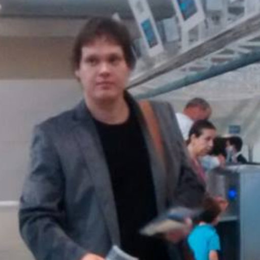

Gabriel Rodrigues Caldas de Aquino
Pesquisador e AnalistaSobre
Sou membro do grupo de pesquisas do LabNet/UFRJ, onde desenvolvo parte das minhas pesquisas. Também faço parte da SegTic/UFRJ, onde trabalho com resposta aos incidentes de segurança. Nesse site estão os arquivos e links para importantes do meu trabalho.
Interesses
- Internet das Coisas
- Qualidade de Dados
- Fusão de Dados
- Segurança da Informação
- Redes de Computadores
Arquivos de trabalhos
Aqui estão os arquivos de trabalhos que eu desenvolvi, teses e dissertações.
Projeto Final / Graduação
S-LEACH: Uma extensão do algoritmo LEACH ciente das aplicações para redes de sensores compartilhadas.
Dissertação / Mestrado
HEPHAESTUS: A Multisensor Data Fusion Algorithm for Multiple Applications on Wireless Sensor Networks.
Contatos
Email: gabriel@labnet.nce.ufrj.br